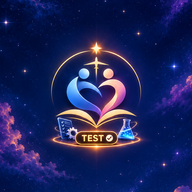

Install it on your phone to open it like an app. Afterwards, open it from your home screen and continue there.
Installe-la sur ton téléphone pour l’ouvrir comme une app. Ensuite, ouvre-la depuis ton écran d’accueil et continue là.

Sanctuaire Test
Test site · Site de test
Welcome. This is the private test site for Sanctuaire. Enter your PIN to continue.
Bienvenue. Voici le site de test privé de Sanctuaire. Saisis ton code PIN pour continuer.